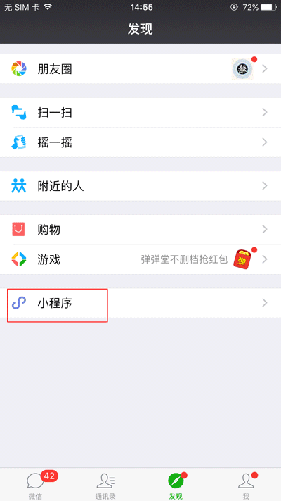

继昨天微信小程序推出群共享功能之后，今天又接连发布了附近的小程序功能。进一步完善线下场景服务。/p>
附近的小程序，顾名思义，就是有小程序的商户，可以将门店小程序或普通小程序展示在“附近”。当用户走到某个地点，
打开“发现→小程序→附近的小程序”，即可将目前所处地的附近的小程序收入囊中

图片全屏后，双击或双指缩放均可对图片进行放大、缩小操作，左右滑动可查看同组(data-preview-group相同的图片为一组)其它图片，点击会关闭预览